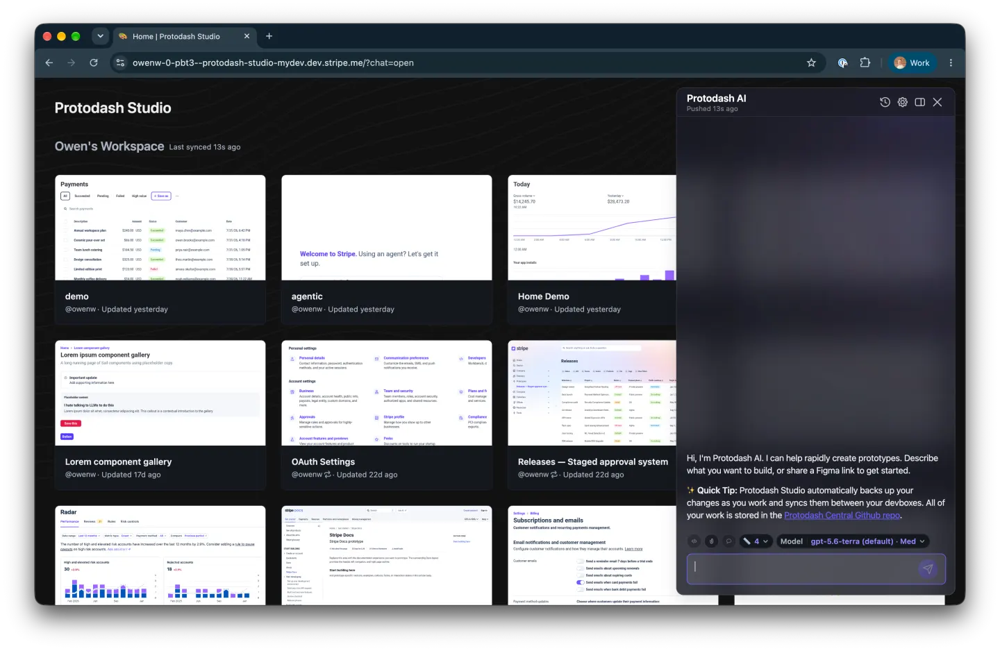
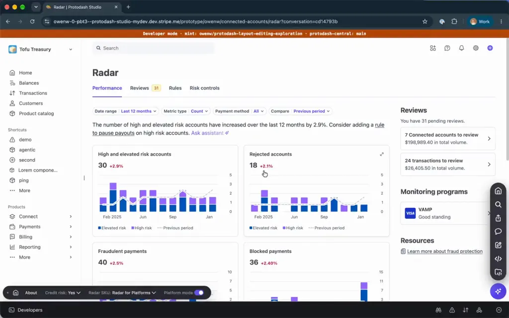
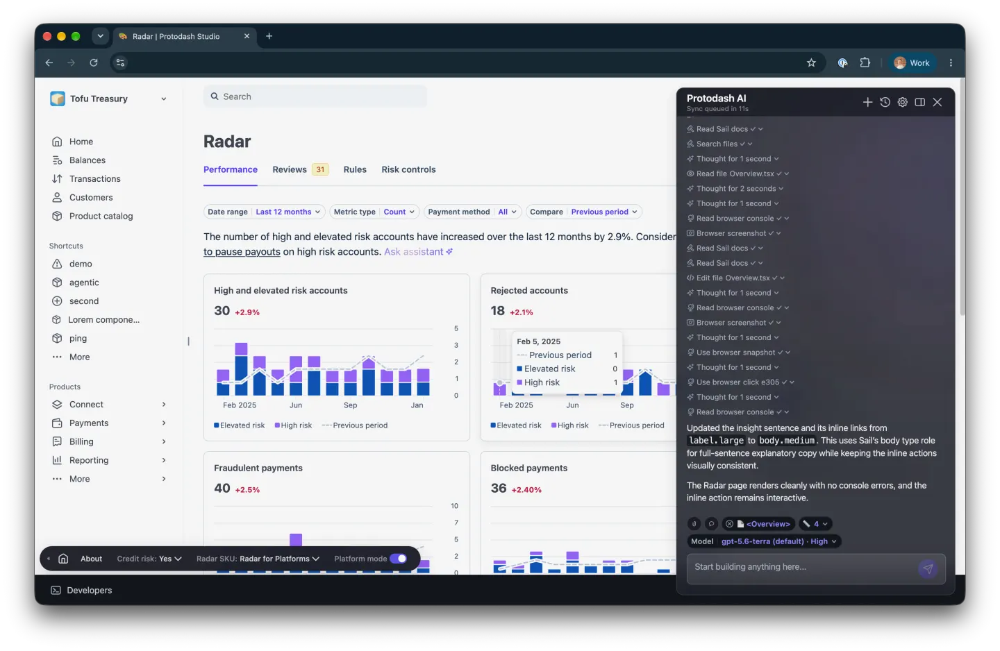

中文全文译文：由「译文工坊」根据英文原文自动翻译生成，供学习参考。结构与措辞以译文为准；想看原始论述，请点上方「阅读原文」。
AI 领导力不只是告诉团队开始使用 AI。真正有意思的工作，是创造条件，让人们能够自信地使用它，达到公司期望的质量标准，并真正改变自己的工作方式。
Protodash 源于一个更宽泛的兴趣：用 AI 缩短从想法到可体验成果之间的距离。我把它当作一个业余项目来做，它却自发传播开来：Designer Fund 和 Foundation Capital 的《AI in Design Report 2026》后来称它是“Stripe 内部使用最广泛的 AI 工具之一”。
为什么通用的 AI 原型达不到质量标准
我开始做 Protodash，是因为在评审中看到设计师尝试各种现成的 AI 原型工具。它们速度很快，但结果常常落入恐怖谷：字体不对、导航奇怪，还有我们后来称为“blurple slop”（泛滥的蓝紫色粗糙设计）的东西。
Stripe 已经有一套高质量、可预测的设计系统，所以很自然地会想：AI 应该能用这些真实的组件来搭建，而不是凭空想象出它自己的产品版本。
构建逼真的 AI 原型系统
Protodash 的大部分内容是我借助 AI 构建的，我利用自己的工程背景确定架构，并引导 AI 达到我想要的质量标准。第一个版本结合了 React 外壳、Stripe 的 Sail 设计系统、MCP（模型上下文协议）集成，以及一套相当有主见的规则，教 AI 如何使用这个项目，并在它做不到时阻止它产生幻觉。
我的目标是把门槛降到最低，让设计师只需要知道如何运行一条命令。在此基础上，我把它接入 Stripe 的 dev box 基础设施，这样大约两分钟就能准备好一个完整、可分享的环境。
最终，我构建了 Protodash Studio：一个基于浏览器的层，任何人都可以在其中创建、改编、评审和迭代原型，完全不需要打开代码编辑器。

将 AI 的杠杆效应扩展到设计团队之外
杠杆效应来自把这种能力交给整个团队。设计师可以快速完成逼真体验的 80–90%，然后把时间花在提升体验的品味与工艺上。
PM 成了最活跃的用户之一：他们不再受阻，可以自行探索想法、更早与用户测试，并与设计师沟通得更清楚。工程师也用了起来。任何人都可以为 Protodash 贡献代码；设计师现在会提交拉取请求，让这个工具按他们期望的工作方式演进。
由于原型是用代码运行的，团队可以探索真实的数据、空状态、国际化、不同的商业模式，以及完整的多步骤流程，而无需手动构建每一种状态。
评审直接在可点击的原型中进行。任何人都可以选中某个元素，把它拖到别处，或直接调整其布局，这些编辑会被汇总，并作为下一轮工作发回给 AI。

实际使用是什么样子
欺诈与风险团队比大多数团队更依赖 Protodash。在 Designer Fund 的视频中，Ryan Spencer 和 Sadhika Billa 打开 Protodash Studio，选择仪表盘框架（包含搜索、账户切换器、导航，以及所有让原型看起来像 Stripe 的外围界面），然后提出需求：“做一个实时监控我支付情况的欺诈仪表盘。”
第一次响应就是一个可运行的仪表盘：欺诈率、被拦截的支付、受保护的收入、随时间和按类别变化的趋势，以及带风险等级的可疑交易，全部由 Sail 组件构建，并且完全可交互。

正如 Ryan 所说，把这样的原型放到用户面前，“体验要丰富得多，因为他们能真正感受到各个组件，而不是面对一张静态页面。”他们用它在团队内部分享概念，并在任何东西开发出来之前就与真实用户进行测试。
这种深度也是为什么在一个 Radar 项目中，高保真的 Protodash 原型成了工程团队的唯一事实来源——这是我作为设计经理的职业生涯中第一次见到这种情况。
让文化从备忘录转向演示
Protodash 成了推动我们文化走向“用演示说话，而不是写备忘录”（demos, not memos）的一种务实方式。更重要的是，它展示了当设计负责人能为团队打造精准、有主见的工具时会发生什么：你不必等待现成的产品，也不必等一个人手充足的内部工具团队，就能改变工作的完成方式。
它从来不是被强制推行的。它之所以传开，是因为解决了大家本来就有的问题，也因为 Stripe 的设计文化——Katie Dill 称之为“布置好餐桌，让派对得以发生”——给了人们空间去做这样的事。用 Ryan Spencer 的话说，就是“在我白天或者夜里挤出时间，把这个东西做出来，让它有可能成为其他人的工具”。
报告给设计负责人的建议是“言出必行”（walk the talk）：亲自用 AI 构建一些东西。对我来说，Protodash 就是这个建议的实践。
这种对组织层面的影响，在 AI in Design Report 2026 中得到了重点介绍：报告将 Protodash 作为企业设计团队构建共享 AI 基础设施的示例；同时也出现在报告的 Stripe 案例研究中：
“我们的团队打造了 ProtoDash，一个内置 Stripe 设计系统的 AI 产品试验场。现在任何人都能在几分钟内构建出逼真的原型。”
— Katie Dill，Stripe 设计负责人
“它最初是 Owen 的一个兴趣项目……并不是被强制要求的。他只是决定做这个东西，让它不仅对设计师，也对工程师和产品经理都轻松得多。”
— Sadhika Billa，Stripe 资深产品设计师
这段经历让我提炼出三条如今用于 AI 工作的原则：从真实的摩擦点出发，而不是从“必须使用这项技术”的要求出发；把 AI 接入定义质量的真实系统和标准；用它节省下来的时间去增加探索与评审，而不是降低工艺标准。
AI 可以保持推进的势头，但品味、责任担当，以及决定哪个问题值得解决，仍然属于人。
我受邀参加了 Claire Vo 的 How I AI，介绍 Protodash 的演进过程，现场构建了一个原型，并聊了当公司能够打造贴合团队实际工作方式的工具时，会发生哪些变化。